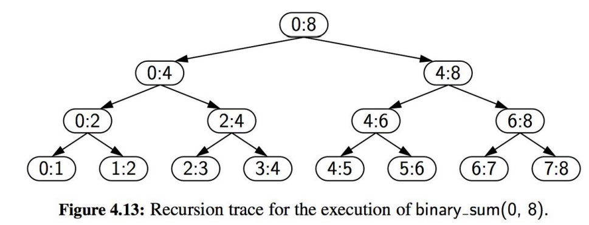
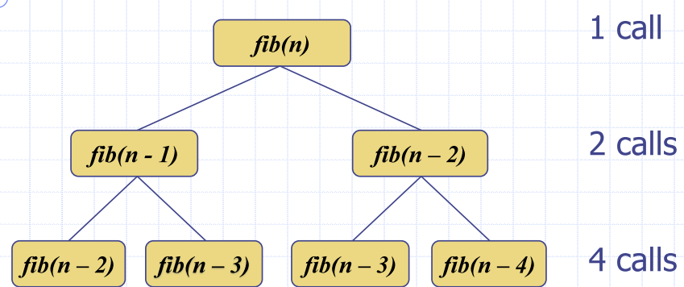
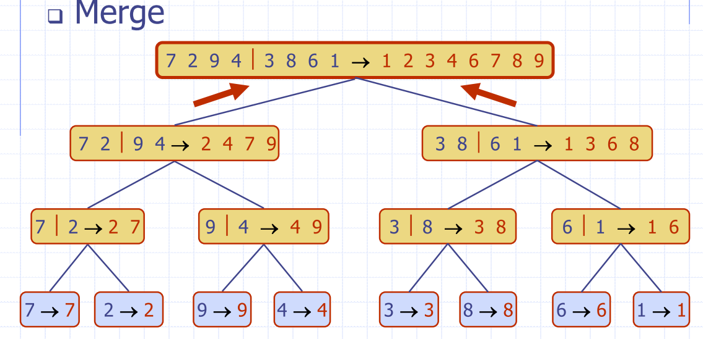

Lecture 1 Recap:
-
Big-O notation
- quantify the rate of growth of the function as we increase the size of the input in terms of their upper bound
- is a function of the number of operations an algorithm takes with input size n
- operating under word-RAM -> assignment of operations to size
-
Develop algorithms that are scalable
-
Given functions and which map positive integers to positive real numbers, we say that:
If there exists constants and such that
- Drop lower order terms and constants
- Make your bounds as tight as possible
- Can we say " is "?
- Yes, - remember big-O is just an upper bound
- but this doesn't give us much information about the function's growth rate
Make the smallest possible class of the functions (the "tightest" possible bound)
- say is even if is in
- Simplify as much as possible
- Use the smallest expression of the class
Operations:
| Type | name |
|---|---|
| Constant | |
| Logarithmic | |
| Linear | |
| Quadratic | |
| Exponential | |
| Factorial |
Lecture 2 - Analysis of Recursion Algorithms
- When a method calls itself
- Classic example: factorial function
Recursion has two steps:
- Test for base cases
- Else there will be a stack overflow - if more than 1000 calls in python
- Every recursive chain of calls must eventually reach a base case.
Types of recursion:
- Linear recursion
- Binary Recursion
- Multiple recursion
Linear recursion:
- Performs a single recursive call
def linear_sum(S, n)
""" Compute the sum of a sequence of the first n numbers of Sequence S"""
if n == 0:
return 0 # This is the base case
else:
return linear_sum(S, n-1) + S[n-1]
Example 2: reverse a list:
def reverse_list(my_list, i, j):
if i < j:
tmp = my_list[i]
my_list[i] = my_list[j]
my_list[j] = tmp
return reverse_list(my_list, i+1, j-1)
else:
return my_list
Tail recusion
- recursive call is the last step
- Result of the call must be used immediately and directly, or it is not a tail recursion
- Factorial is not a tail recursion, because it is multiplied by before it is returned
- Can easily be converted to iterative forms
Binary recursion
- Two calls for each non-base case 
def binary_sum(S, start, stop):
if start >= stop:
return 0
elif start == stop-1:
return S[start]
else:
mid = (start + stop) // 2
return binary_sum(S, start, mid) + binary_sum(S, mid, stop)
Multiple recursion
- Makes potentially many recursive calls:
import os
import sys
def directory_tree(path):
if os.path.isdir(path): # is this a directory?
for thing in os.listdir(path):
childpath = os.path.join(path, thing)
directory_tree(path) # note – this could be called many times
else: # nope, we’ve bottomed out – let’s just print this file/path
print (path)
Recursion activity
- Use recursion to sort an array of n integers
- Call this
selectionSort
Base Case
- , nothing to sort
Recursive case
- Find the largest element of the array - find the largest
- Swap with the largest element in the array
- repeat this process for the next elements
Algorithm selectionSort(A, n)
if n > 1 then
maxIndex <- 0
for i <- 1 to n - 1 do
if A[i] > A[maxIndex] then
maxIndex <- i
swap(A[maxIndex], A[n – 1])
selectionSort(A, n - 1)
- Each time I recurse, I reduce the list by 1
Running time of selectionSort

- decreases by one in each call, so there will be recursive calls in total
Fibonacci Algorithm
Algorithm fib(n)
for i
if n < 2 then
return 1
return fib(n - 1) + fib(n - 2)

- The number of calls doubles at each level in the recursion tree
- Therefore the total number of calls will be less than or equal to We can say this algorithm is
Divide and conquer algorithm paradigm
Search Algorithm
Binary search, list the element in a sorted list in time
- Compare the middle element,
m, withk- If k < m, search the left half
- If k > m, search the right half
- If k = m, return true
""" Return true us target is found in indicated portion of a Python list
The search only considers the portion from data[low] to data[high] inclusive
"""
def binary_search(data, target, low, high):
if low > high:
return False
else:
mid = (low+ high) // 2
if target == data[mid]:
#recur on the portion left of the middle
return binary_search(data, target, low, mid-1)
else:
#recur on the portion right of the middle
return binary search(data, target, mid + 1, high)
Binary Search Recurrence
We can express the running time of binary search as:
At the th step: Let
Sorting
- Sorting is a fundamental operation
- Given a list, how would you do it?
- Bubble sort, insertion sort, or selection sort
Bubblesort
- Bubble the greatest number to the top
- time complexity
- UPDATE
Merge-Sort
- Sorting based on the divide-and-conquer paradigm
- Guaranteed running time
- Sort input sequence with elements
- Divide: partition into two halves
- Recur: Recursively sort each half
- Conquer: merge the two halves
DIVIDE STEP
Algorithm mergeSort(A, l, r)
Input an array A
Output A sorted between indices l and r
if l < r
m <- floor((l + r) ÷ 2 )
mergeSort(S, l, m)
mergeSort(S, m + 1, r)
merge(S, l, m, r)
CONQUER STEP
- Conquer step Merging two sorted sequences, each with n÷2 elements, takes time



Analysis of Merge Sort:
We can express the running time of mergesort as:
- Depth h of the merge-sort tree is
- Overall amount of work done at nodes of depth
iis - Thus, the total running time of merge-sort is
Quicksort
-
Randomised Divide and conquer sorting algorithm
-
Similar to Merge sort
- Picking a pivot, splitting on the left and the right
-
Divide: pick a random element x (called pivot) and partition S into
Lelements less than xEelements equal to xGelements greater than x
-
Recur: sort
LandG -
Conquer: join
L,EandG
Divide step
- Partition input sequence
- remove, in turn, each element y from S, and
- insert y into L, E or G, depending on the result of the comparison with the pivot x
- Each insertion and removal is at the beginning or end of a sequence
- hence takes O(1) time
- Thus, the partition step of quick-sort takes O(n) time

Performance Analysis
- Worst case for quick-sort occurs when the pivot is the minimum or maximum element
- Running time is proportional to the sum: n + (n−1) + … + 2 + 1
- Thus, the worst-case running time of quick-sort is
Expected running time
- Consider a recursive call of quick-sort on a sequence of size s
- Good call: the sizes of L and G are each less than 3s÷4
- Bad call: one of L and G has size greater than 3s÷4

-
Good calls have a probability 1/2
- ½ of the possible pivots cause good calls
-
Probabilistic Fact: Expected number of coin tosses required in order to get k heads is 2k
- expected height of the quick-sort tree is O(log n)
- Amount of work done at nodes of the same depth is O(n) Thus, the expected running time of quick-sort is O(n log n)
In-place Quick-Sort
-
In partition step, use replace operations to rearrange the elements of the input sequence
- elements less than the pivot have index less than h
- elements equal to the pivot have index between h and k
- elements greater than the pivot have index greater than k
-
Recursive calls consider
- elements with index less than h
- elements with index greater than k
-
Perform partition using two indices to split S into L and E & G (a similar method can split E & G into E and G).

- Repeat until j and k cross:
- Scan j to the right until finding an element > x.
- Scan k to the left until finding an element < x.
- Swap elements at indices j and k

s